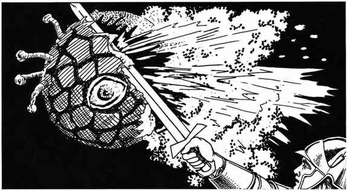

气孢 · Gas Spore
 |
|
距离超过 10 尺时，观察者有 90% 概率把气孢误认为眼魔；即使近距离观察，也有 25% 概率误认。气孢有一只假的中央眼，顶部的根状突起也酷似眼魔的眼柄。
气孢只要受到 1 点伤害便会爆炸；其内部气体接触空气后剧烈反应，使 20 尺半径内所有生物受到 6–36 点伤害。通过对抗魔杖的豁免检定可将伤害减半，降至 3–18 点。
若气孢接触到裸露皮肤，便会将细小根状体射入活体，并在一个近战轮内蔓延至宿主体内；随后气孢立即死亡。宿主必须在 24 小时内接受医疗疾病，否则会死亡，并从体内长出 2–8 个气孢。